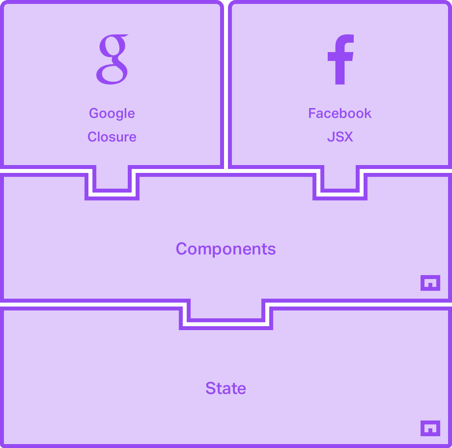

Foundational
Metal.js is not a library of components, but a foundation for creating the components you need.
Learn More
Stable
Used in numerous production environments already, Metal.js is the backbone of many frontend projects.
Learn More
Future Ready
By using ES6 we benefit from the best of JavaScript, while maintaining easy-to-read and clean code.
Learn More
Our Architecture
Metal.js components can be written in two templating languages, Soy (Google Closure), and JSX (React). Both are compiled to incremental dom which is used to progressively update DOM elements when component state updates. Therefore, you can spend less time doing manual DOM manipulation, and more time on what matters.
JSX
JSX is a preprocessor step that adds XML syntax to JavaScript, it allows you to write your component markup directly in your Metal.js component class. Keeping your logic and view close together.
Soy
Soy is an isomorphic templating language that can be rendered in multiple development environments, and allows for advanced progressive ehancement. The template exists in its own file, seperate from your component's JavaScript.